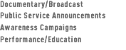

|

|
Partial Production ListDOCUMENTARY / IN PRODUCTION BLACK BALLERINA (IN PRODUCTION; 60:00), a feature length documentary-in-progress, is a story of passion, opportunity, heartbreak and triumph of the human spirit. Set in the overwhelmingly white world of classical dance, it tells the stories of several black women from different generations who fell in love with ballet. Six decades ago, while pursuing their dreams of careers in classical dance, Joan Myers Brown, Delores Browne and Raven Wilkinson confronted racism, exclusion and unequal opportunity. In 2014, three young black women also pursue careers as ballerinas. Do they find that the color of ballet has changed? If so, how? If not, why? Black Ballerina movie clip (in production) STRATHMERE (IN PRODUCTION; 60:00) tells the story of a small New Jersey fishing and vacation town on the cusp of irrevocable change. Through the mid-2000s, soaring property values, skyrocketing taxes and a shrinking year-round population had increasingly endangered this fragile barrier island community. By 2008, severe environmental changes in the form of major beach erosion have further jeopardized Strathmere. Fighting for its survival, residents reveal their passion for the island, while viewers come to understand the value of such places to the human spirit. In January 2009, a short version of the documentary appeared on WYBE-TV (Independence Public Media) as part of the station’s PHILADELPHIA STORIES series. STRATHMERE is being co-produced/co-directed by Frances McElroy and Ann Tegnell. Funders so far include the Philadelphia Foundation. Strathmere movie clip (in production) DOCUMENTARY / BROADCAST MAKING WAVES (2011; 52:00) Through the personal experiences of several passionate rowers from diverse backgrounds, the documentary looks at the challenges facing this historically white, tradition bound sport in its efforts to increase diversity. Representing the sport’s storied past and potential future, the individual stories interweave to mark the sport’s evolution in terms of class, gender and race. Funders include The William Penn Foundation, Independence Foundation, the Pennsylvania Humanities Council, Pennsylvania Partners in the Arts and the Philadelphia Independent Film and Video Association. Frances McElroy is director/producer. MAKING WAVES premiered on WHYY (PBS Philadelphia) in October 2011. Watch for it on PBS stations around the country beginning summer 2012. DVDs of MAKING WAVES are available to institutions of higher education for $250 which includes a password protected, downloadable teaching/discussion guide. A DVD Consumer version for personal home use only is $30. Checks should be made out to: Shirley Road Productions, 108 Shirley Road, Narberth, PA 19072 For information about diversity education and workshops visit: www.withycombeconsulting.com For information about diversity in rowing and community rowing visit USRowing.org Making Waves movie clip MIRROR DANCE (2005; 53:00), co-produced and co-directed by Frances McElroy and Maria Rodriguez and edited by Ann Tegnell, tells the story of identical Cuban twin sisters -- both former ballerinas with the National Ballet of Cuba -- whose once inseparable relationship was severed by international politics. With music composed by Elio Villafranca, MIRROR DANCE was shot in Havana, Cuba and Narberth, PA over the course of five years. The hour-long documentary is supported by ITVS (Independent Television Service/CPB), the National Endowment for the Arts, Latino Public Broadcasting, The Philadelphia Foundation, the 5-County Arts Fund, the Montgomery County Foundation and the Philadelphia Independent Film & Video Association In-Kind Subsidy Fund. MIRROR DANCE won a 2005 CINE Golden Eagle Award; First Place for Documentary Excellence from the Society of Professional Journalists, Greater Philadelphia Chapter; 2006 Imagen Award finalist for Best Documentary for Television or Film; Award of Merit, Latin American Studies Association Film Festival, Montreal, Canada, 2007. The documentary premiered nationally in 2005 on the Emmy Award winning PBS series INDEPENDENT LENS. DVDs are available for home viewing from Shirley Road Productions for $30 (includes postage; Pennsylvania residents please add 6% sales tax). For educational/institutional sales or for international distribution, please contact: info@shirleyroadproductions.org. Mirror Dance movie clip BALLYCASTLE (2004; 27:00), produced and directed by Frances McElroy and edited by Ann Tegnell, is a half-hour documentary which tells the story of Stuart Shils, a Philadelphia based painter of Jewish heritage whose encounter with a remote, coastal village in Ireland forever changed his life. It premiered regionally on WYBE's Philadelphia Stories series in August 2004. The documentary was supported by the Pennsylvania Council on the Arts, the Leeway and Claneil Foundations, and the 5-County Arts Fund. Excerpts of the program were exhibited in May 2001 at Philadelphia's Woodmere Art Museum, as part of an exhibition of Stuart Shils' "Lightscapes" from Ireland, exhibited at Concord (MA) Art Museum as part of American Artists in Rural Ireland exhibit, 2006; Southside Film Festival, Bethlehem, PA, 2006. BALLYCASTLE received a 2004 CINE Golden Eagle Award and First Place for Documentary Excellence from the Society of Professional Journalists, Greater Philadelphia Chapter. American Public Television is presenting BALLYCASTLE nationally with WHYY (PBS/Philadelphia). DVDs are available for home viewing from Shirley Road Productions for $24 (includes postage; Pennsylvania residents please add 6% sales tax). For educational/institutional sales or for international distribution, please contact: info@shirleyroadproductions.org. Also visit, www.stuartshils.com Ballycastle movie clip AN ANGEL IN THE VILLAGE (1999; 56:40) The one-hour, nationally broadcast documentary was produced by Frances McElroy, directed by Glenn Holsten and edited by Kathleen Soulliere. It tells the story of Chinese-born, Philadelphia-based artist Lily Yeh and features her community-based work at the Village of Arts and Humanities in North Philadelphia and in Korogocho, Kenya. The program received the 2000 Mid-Atlantic Emmy Award for best cultural program, first prize for documentary excellence from the Society of Professional Journalists, Greater Philadelphia Chapter and a Gabriel Award. Project funders include the Independent Television Service (ITVS/CPB), The William Penn Foundation, The Phoebe Haas Charitable Trust, The Philadelphia Foundation, Corestates Bank, Vivian and Meyer P. Potamkin, the Pennsylvania Council on the Arts, and the Philadelphia Independent Film and Video Association. In 2001, the documentary was screened at the Philadelphia Festival of World Cinema. DVDs are available for home viewing from Shirley Road Productions for $30 (includes postage; Pennsylvania residents please add 6% sales tax). For educational/institutional sales or for international distribution, please contact: info@shirleyroadproductions.org. Angel in the Village movie clip STIRRING IT UP (2003), produced and directed by Frances McElroy and edited by Sharon Mullally, takes a lively road trip across the Commonwealth to show how the Pennsylvania Nutrition Education Program is meeting the needs of low-income adults and children. Funded by the Kellogg Foundation, the program was broadcast statewide on public stations. The video was a project of Penn State University’s Department of Nutrition Science. OUR FOOD OUR FUTURE (2001), produced and directed by Frances McElroy and edited by Sharon Mullally, explores the need to improve the self-reliance of communities in their food and nutrition needs. It features four US Department of Agriculture supported "community food projects" in Philadelphia, Camden, New Jersey, the Bronx, and Romney, West Virginia. The program was distributed nationally by American Public Television. It won an award for documentary excellence from the Society of Professional Journalists, Greater Philadelphia Chapter and was nominated for a Mid-Atlantic Emmy Award in 2002. AFTER SUNDAY (1998), produced by Frances McElroy and directed by Glenn Holsten, was written by Ann de Forest. The 25-minute video was commissioned by Partners for Sacred Places as part of a national campaign to create awareness about the valuable community service role played by the nation's sacred buildings. It was broadcast throughout the Philadelphia region on public television station WHYY. WATERFRONT PHILADELPHIA (1994) is a 30-minute documentary about the importance of the port of Philadelphia to the region. It was produced for the Pennsylvania Department of Commerce and was broadcast throughout the Philadelphia region on public stations WHYY and WYBE. It received the American Association of Port Authorities, Communications Award of Merit for Video Production, 1994 PUBLIC SERVICE ANNOUNCEMENTS PHILADELPHIA MUSEUM OF ART CRAFT SHOW PSA (2001 - current). The public service announcement was produced for regional commercial, public and cable telecast to increase awareness of the Museum’s annual Craft Show. In 2004, Shirley Road Productions shot footage of the Crafts Council of Ireland Exhibit for NATIONWIDE, a weekly series on RTE, Ireland’s national broadcaster. PHILADELPHIA MUSEUM OF ART PSAs (1995-2001). We created a series of :30 public service announcements promoting the annual Museum of Art Craft Show, The Fairmount Park Mansion Christmas tour, the Brancusi exhibition, the Cezanne exhibition, the Wednesday night programs, the Rodin/Michelangelo exhibit, the Edward Hicks and Worldly Goods exhibitions, and a generic museum PSA. In 1996 and 1997, the PSAs received Mid-Atlantic Emmy nominations. PENNSYLVANIA ACADEMY OF THE FINE ARTS PSA (2001). A PSA produced for the Andy Warhol: Social Observer exhibition won a mid-Atlantic Emmy Award in 2001. In 1999, a public service announcement was produced for regional commercial, public and cable telecast to increase awareness of the Academy's collection. AWARENESS CAMPAIGNS After School Meal Program (2007) is a two-minute educational video for the Nutritional Development Services (Archdiocese of Philadelphia) website about the purpose and design of the after school meal program. Project H.O.M.E. (1998) is a 20-minute video which describes the efforts of Project H.O.M.E., founded ten years ago by Sister Mary Scullion, to humanize the face of homelessness and to find solutions to homelessness. It was the Third place winner, Best Video Category, of the National Society of Fundraising Executives. The project was funded by the Independence Foundation. AID FOR FRIENDS (1999) is a 15-minute video for AID FOR FRIENDS, a non-profit organization which provides food, meals and other services to elderly and disabled shut-ins. It is used for training, volunteer recruitment, and education. THE HISTORY OF VACCINES AT WISTAR (1997) is a 20-minute video produced for the Wistar Institute's Archive about the development of vaccines at the world-renowned scientific institute. CHRIST CHURCH (1995) is a 17-minute video marking the 300th anniversary of Old Christ Church in Philadelphia. It was produced for the Old Christ Church Preservation Trust and was partially funded by PNC Bank. MATH ANXIETY (1994) is an 8-minute video for the Philadelphia Mayor's Commission on Literacy, for the purpose of recruiting math literacy instructors. CHOPTIONS (1993) is a 12-minute video produced for the Children's Hospital of Philadelphia, Human Resources Department, to educate hospital staff about their new benefits program. PERFORMANCE / EDUCATION THE SKY -- USE IT OR LOSE IT (1996; 6-minutes) & THE JAMAICAN RIVER MAMA (1999; 8 minutes) are two video animations produced for PRINTS IN PROGRESS, a community-based children's visual art organization. They combine animated children's drawings and live action video. Both videos feature storyteller Linda Goss. They were screened as part of The Scribe Video Center's STREET MOVIES project in 1998 and 1999. THE SKY -- USE IT OR LOSE IT was a finalist in the Short Film Category of the New York Festivals in 1999.
|
|||